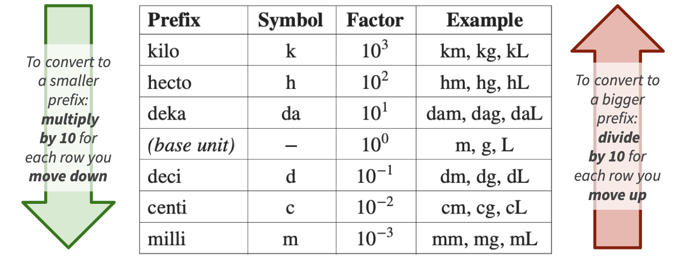

- Day 1: Algebra refresher; Units I
- Day 2: Units II; Functions; Graphing; Linear functions
- Day 3: Exponential functions and logarithms; Limits
- Day 4: Derivatives
- Day 5: Integration & ODEs
Algebra Refresher and Units
Bren Math Workshop
Carmen Galaz García, Ph.D.
Bren School of Environmental Science & Management
Some materials have been adapted from Nathaniel Grimes work for the Bren Math Workshop.
MESM Math Workshop basics
Welcome to the MESM Math Workshop
- Instructor: Carmen Galaz García
- Course hours: Daily 12:00pm - 2:00pm PST (except for Day 5, which is 12:30pm - 2:30pm PST)
- Location: Bren Hall 1414
- Website: https://bit.ly/mesm-math-workshop
About your instructor
Carmen Galaz García (she/her)
- Assistant Teaching Professor @ Bren
Before:
- Data Scienist @ NCEAS
- Ph.D. in Mathematics @ UCSB
Teaching & Research
- Python courses and Capstone Projects for Masters in Environmental Data Science (MEDS)
- Supporting math and data science across Bren!
- NCEAS/TNC collaboration for invasive iceplant mapping analyzing remotely sensed images


About you!

image: Flaticon.com
Topics overview
Workshop Objectives
🧹 Shake off the math dust
💪 Exercise core math skills needed to succeed in your Bren courses
🌎 Explore how valuable math is to environmental data science
🤝 Build a collaborative environment and get to know your cohort
Student expectations
We expect all students will:
🤗 Support and encourage all classmates
🌱 Be open to learning from each other
🙌 Bring a collaborative attitude and communicate respectfully
💡 See opportunities to share kownledge as a chance to deepen understanding
✅ Complete all in-class exercises
Student expectations
We expect all students will:
🤗 Support and encourage all classmates
🌱 Be open to learning from each other
🙌 Bring a collaborative attitude and communicate respectfully
💡 See opportunities to share kownledge as a chance to deepen understanding
✅ Complete all in-class exercises
Logistics
- No food in BH 1414
- If you are feeling sick: stay home and take care of yourself! Please mask up if you are not feeling 100%.
Please fill out this survey

Math in Environmental Science
Why am I taking a math class?
or,
Why do I have to know math when a computer will do it for me?
A quantitative brain warm-up
MESM students have diverse work & academic histories
This course (re)introduces math concepts and tools that:
- Focus on applications to environmental data science
- Are specifically relevant for MEDS projects, coursework
- Provide an entryway into building computational skills
- Refresh quantitative thinking skills generally
- Refresh essentials like units, conversions, notation, language
Share with the person next to you:
What has been your life or professional experience with math? Best friend ever, mortal enemy, or something in between?
How do you see math being relevant to solving environmental problems?
Math is an important tool in environmental science
Math helps us investigate the world and communicate our findings
Used by scientists to find evidence
Can be used to quantify relations, trends, and changes
Mathematical models can help us understand complex systems
Must be used responsibly and with awareness of potential biases and limitations
Helps us support arguments that can transform policy and actions
We need to understand the math to responsibly make decisions on it!
Math at Bren
In classes:
- ESM 201: Ecology of Managed Ecosystems
Lotka-Volterra Models \[ \begin{align} \frac{dN_1}{dt}&=r_1N_1\left(\frac{K_1-N_1-\alpha N_2}{K_1}\right)\\ \frac{dN_2}{dt}&=r_2N_2\left(\frac{K_2-N_2-\beta N_1}{K_2}\right) \end{align} \]
- ESM 222: Pollution Risk Management
Groundwater transport of absorbed contaminant \[ \frac{\partial C}{\partial t}=\left(\frac{D}{R}\frac{\partial^2t}{\partial x^2}\right)-\left(\frac{v}{R}\frac{\partial C}{\partial x}\right)-\frac{k}{R}C \]
In Research
Today: Math brain warm up
- Algebra review
- Rules of exponents
- Units
Algebra review
Rules of algebra
You can get far with a few rules:
Follow order of operations (a.k.a. PEDMAS)
Never change an equation. Instead, rewrite them into more useful forms
Manipulate BOTH sides of an equation with the SAME PROCEDURE.
Always add/substract/multiply/divide by the same number on both sides. More generally, always apply the same function to both sides of the equation.
Order of operations (P-E-DM-AS)
P - Parentheses
E - Exponents
D/M - Division / multiplication
A/S - Addition / subtraction
Order of operations practice problems
✏️ Take a minute to solve these individually.
- Simplify \(\frac{4-6}{2}(3+1)-\frac{1+2*4}{3}\)
- Simplify \(3x+4(8x-6x) -(2y-5)+\frac{2x(1-3)}{2}\)
- If we are given the values of \(x=-3\) and \(y=2\), what would be the value of \(z\)? \[ z = 4*(y-4)+(x+1)^2 \]
Order of operations practice problems
💡 Let’s see a solution!
\(\frac{4-6}{2}(3+1)-\frac{1+2*4}{3}\)
\(3x+4(8x-6x) -(2y-5)+\frac{2x(1-3)}{2}\)
Order of operations practice problems
💡 Let’s see a solution!
If we are given the values of \(x=-3\) and \(y=2\), what would be the value of \(z\)? \[ z = 4*(y-4)+(x+1)^2 \]
Practice solutions
\[ \small \begin{aligned} \frac{4-6}{2}(3+1)-\frac{1+2*4}{3} &= \frac{-2}{2}(4)-\frac{9}{3} \\ &= -1(4)-3 \\ &= -4-3 \\ &= -7 \end{aligned} \]
\[ \small \begin{aligned} 3x+4(8x-6x) -(2y-5)+\frac{2x(1-3)}{2} &= 3x+4(2x)-2y+5+\frac{2x-6x}{2} \\ &= 3x+8x-2y+5+\frac{-4x}{2} \\ &= 3x+8x-2y+5-2x \\ &= 9x-2y+5 \end{aligned} \]
\[ \small \begin{aligned} z = 4(y-4)+(x+1)^2 &= 4(2-4)+(-3+1)^2 \\ &= 4(-2)+(-2)^2 \\ &= -8+4 \\ z&=-4 \end{aligned} \]
Solving equations
Equations help us find unknown values that satisfy certain conditions.
Remember the rules:
Never change an equation. Instead, we rewrite them into more useful forms
Manipulate BOTH sides of an equation with the SAME PROCEDURE.
Always add/substract/multiply/divide by the same number on both sides. More generally, always apply the same function to both sides of the equation.
Solving equations
Equations help us find unknown values that satisfy certain conditions.
Remember the rules:
Never change an equation. Instead, we rewrite them into more useful forms
Manipulate BOTH sides of an equation with the SAME PROCEDURE.
Always add/substract/multiply/divide by the same number on both sides. More generally, always apply the same function to both sides of the equation.
Solving equations: example
✏️ Isolate \(y\) in terms of \(x\):
\[ \begin{aligned} x&=\frac{(400-y)}{80} \\ \end{aligned} \]
Solving equations: example
💡 Let’s see a solution!
Isolate \(y\) in terms of \(x\):
\[ \begin{aligned} x&=\frac{(400-y)}{80} \\ 80x&=\frac{(400-y)\cancel{80}}{\cancel{80}} &\text{ Multiply both sides by 80} \\ 80x-400&=\cancel{400}-\cancel{400} -y &\text{ Subtract both sides by 400} \\ -1(80x-400)&=-y(-1) &\text{Multiply both sides by -1} \\ 400-80x&=y &\text{Flip terms for simplicity} \end{aligned} \]
Solving equations: Practice set 1
It can be easy to make mistakes while doing algebra. Practice is key!
✏️ Solve all in terms of \(x\):
- \(3x+2=10x-12\)
- \(4-3(2x+1)=8-\frac{3x}{2}\)
- \(3(x+7a)-5=b+2(c-4x)\)
Solving equations: Practice set 1
✏️ Let’s see a solution!
Solve all in terms of \(x\)
- \(3x+2=10x-12\)
- \(4-3(2x+1)=8-\frac{3x}{2}\)
Solving equations: Practice set 1
✏️ Let’s see a solution!
Solve all in terms of \(x\)
- \(3(x+7a)-5=b+2(c-4x)\)
Practice set 1 solutions
\[ \small \begin{aligned} 3x+2&=10x-12 \\ 3x+2+12&=10x-12(+12) \\ 3x-3x+14&=10x-3x \\ 14&=7x \\ x&=2 \end{aligned} \]
\[ \small \begin{aligned} 4-3(2x+1)&=8-\frac{3x}{2}\\ 4-3-6x&=8-\frac{3x}{2} \\ 1-6x&=8-\frac{3x}{2} \\ 2-12x&=16-3x \\ -9x&=14 \\ x&=\frac{-14}{9}\\ \end{aligned} \]
Practice set 1 solutions
\[ \small \begin{aligned} 3(x+7a)-5&=b+2(c-4x)\\ 3x+21a-5&=b+2c-8x \\ 11x+21a-5&=b+2c \\ 11x&=5+b+2c-21a\\ x&=\frac{5+b+2c-21a}{11} \end{aligned} \]
Solving equations: Practice set 2
✏️ Solve these individually.
- Prices are important in economics, but not always available for environmental goods. If we know quantity \(Q=\dfrac{(400-P)}{80}\), isolate \(P\) in terms of \(Q\).
- The logistic per-capita growth rate is \(r\left(1-\dfrac{N}{K}\right)\), where \(N\) is population size, \(K\) is carrying capacity, and \(r\) is the intrinsic growth rate. If this rate equals \(0.02\) when \(N=750\) and \(K=1000\), solve for \(r\).
- A steady-state concentration balance for a pollutant \(C\) (mg/L) in a mixed system is \(3(C-5)+2C=40\). Solve for \(C\).
- A watershed’s water balance is: change in storage per unit time = precipitation (\(P\)) − actual ET − river outflows (\(Q\)). At steady state (storage isn’t changing), with actual evapotranspiration (ET) being 60% of precipitation and \(Q=320\) mm/y, solve for \(P\).
Solving equations: Practice set 2
💡 Let’s see a solution!
1) Prices are important in economics, but not always available for environmental goods. If we know quantity \(Q=\dfrac{(400-P)}{80}\), isolate \(P\) in terms of \(Q\).
Solving equations: Practice set 2
💡 Let’s see a solution!
2) The logistic per-capita growth rate is \(r\left(1-\dfrac{N}{K}\right)\), where \(N\) is population size, \(K\) is carrying capacity, and \(r\) is the intrinsic growth rate. If this rate equals \(0.02\) when \(N=750\) and \(K=1000\), solve for \(r\).
Solving equations: Practice set 2
💡 Let’s see a solution!
3) A steady-state concentration balance for a pollutant \(C\) (mg/L) in a mixed system is \(3(C-5)+2C=40\). Solve for \(C\).
Solving equations: Practice set 2
💡 Let’s see a solution!
4) A watershed’s water balance is: change in storage per unit time = precipitation (\(P\)) − actual ET − river outflows (\(Q\)). At steady state (storage isn’t changing), with actual evapotranspiration (ET) being 60% of precipitation and \(Q=320\) mm/y, solve for \(P\).
Practice set 2 solutions
1)
\[ \small \begin{aligned} Q&=\frac{(400-P)}{80} \\ 80Q&=400-P \\ 80Q-400&=-P \\ P&=400-80Q \end{aligned} \]
2)
\[ \small \begin{aligned} 1-\frac{750}{1000} &= 0.25 \\ 0.25r &= 0.02 \\ r &= 0.08 \text{ per year} \end{aligned} \]
3)
\[ \small \begin{aligned} 3C-15+2C&=40\\ 5C&=55\\ C&=11 \text{ mg/L} \end{aligned} \]
4)
\[ \small \begin{aligned} \text{storage} &= P - AET - Q \\ 0 &= P - 0.6P - Q \\ 0.4P &= 320 \\ P &= 800 \text{ mm/y} \end{aligned} \]
Let’s take a 5 minute break

image: Flaticon.com
Rules of exponents
Exponents make algebra more interesting!
Example
The expression \(x^3\) means \(x\) multiplied by itself 3 times: \[x^3=x * x * x\]
More generally, \[x^n = x \text{ to the power of } n.\]
Intuitively, the exponent \(n\) tells us how many times to multiply the basis \(x\) by itself:
\[x^n = \underbrace{x \times x \times \ldots \times x}_{n \text{ times}}\]
But the exponent can be any (real) number, not only integers!
What are exponents good for?
They can describe really big numbers

Diameter of the Milky Way = 1,000,000,000,000,000,000,000 meters = \[10^{21} \text{ m}\]
And also really small numbers

Diameter of a human red blood cell = 0.0000000001 meters = \[10^{-10} \text{ m}\]
This way, we can use exponents to describe exponential growth and decay. Many environmental variables behave in this way.
Rules and properties of exponents (1)
✏️
- Product rule:
- Quotient rule:
- Any non-negative \(x\) to the power of 0 equals 1:
- Negative exponent means divide:
- Fractional exponent means take the \(n\)-th root:
Rules and properties of exponents (2)
✏️
- Power of a power means multiply the exponents:
- Exponents get distributed over products:
- And exponents get distributed over divisions:
- If \(a\) is the \(n\)-th root of \(x\), then \(a\) to the \(n\) equals \(x\):
Rules and properties of exponents (1)
- Product rule: \(x^a * x^b = x^{a+b}\)
- Quotient rule: \(\frac{x^a}{x^b} = x^{a-b}, \ \ \text{for } x \neq 0\)
- Any non-negative \(x\) to the power of 0 equals 1: \(x^0 = 1, \ \ \text{for } x \neq 0\)
- Negative exponent means divide: \(x^{-a} = \frac{1}{x^a}, \ \ \text{for } x \neq 0\)
- Fractional exponent means take the \(n\)-th root: \(x^{\frac{1}{n}} = \sqrt[n]{x}\)
Rules and properties of exponents (2)
- Power of a power means multiply the exponents: \((x^a)^b = x^{ab}\)
- Exponents get distributed over products: \((xy)^a = x^a y^a\)
- And exponents get distributed over divisions: \(\left( \frac{x}{y} \right)^a = \frac{x^a}{y^a}\)
- If \(a\) is the \(n\)-th root of \(x\), then \(a\) to the \(n\) equals \(x\):
\[ a = \sqrt[n]{x} \Rightarrow a^n = x \]
\[ \begin{array}{|l|l|} \hline \textbf{Rule} & \textbf{Expression} \\ \hline \text{Product Rule} & x^{a} \cdot x^{b} = x^{a+b} \\ \hline \text{Quotient Rule} & \frac{x^{a}}{x^{b}} = x^{a-b}, \quad x \neq 0 \\ \hline \text{Zero Exponent} & x^{0} = 1, \quad x \neq 0 \\ \hline \text{Negative Exponent} & x^{-a} = \frac{1}{x^{a}}, \quad x \neq 0 \\ \hline \text{Fractional Exponent} & x^{\frac{1}{n}} = \sqrt[n]{x} \\ \hline \text{Power of a Power} & (x^{a})^{b} = x^{ab} \\ \hline \text{Power of a Product} & (xy)^{a} = x^{a}y^{a} \\ \hline \text{Power of a Quotient} & \left(\frac{x}{y}\right)^{a} = \frac{x^{a}}{y^{a}} \\ \hline \text{$n$-th Root Definition} & a = \sqrt[n]{x} \quad \Rightarrow \quad a^{n} = x \\ \hline \end{array} \]
Exponents practice
✏️ Simplify the following.
- \(\frac{6^5}{6^3}\)
- \((x^2y)^4\)
\(\frac{x^5y^6}{xy^2}\)
\(\frac{24x^6}{12x^{-8}}\)
\[ \begin{array}{|l|l|} \hline \textbf{Rule} & \textbf{Expression} \\ \hline \text{Product Rule} & x^{a} \cdot x^{b} = x^{a+b} \\ \hline \text{Quotient Rule} & \frac{x^{a}}{x^{b}} = x^{a-b}, \quad x \neq 0 \\ \hline \text{Zero Exponent} & x^{0} = 1, \quad x \neq 0 \\ \hline \text{Negative Exponent} & x^{-a} = \frac{1}{x^{a}}, \quad x \neq 0 \\ \hline \text{Fractional Exponent} & x^{\frac{1}{n}} = \sqrt[n]{x} \\ \hline \text{Power of a Power} & (x^{a})^{b} = x^{ab} \\ \hline \text{Power of a Product} & (xy)^{a} = x^{a}y^{a} \\ \hline \text{Power of a Quotient} & \left(\frac{x}{y}\right)^{a} = \frac{x^{a}}{y^{a}} \\ \hline \text{$n$-th Root Definition} & a = \sqrt[n]{x} \quad \Rightarrow \quad a^{n} = x \\ \hline \end{array} \]
Exponents practice
✏️ Let’s see a solution.
- \(\frac{6^5}{6^3} = 6^{5-3} = 6^2\)
- \((x^2y)^4 = (x^2)^4*y^4 = x^8y^4\)
- \(\frac{x^5y^6}{xy^2} = \frac{x^5}{x}*\frac{y^6}{y^2} = x^{5-1}*y^{6-2} = x^4y^4 = (xy)^4\)
- \(\frac{24x^6}{12x^{-8}} = 2x^6x^{(-(-8))}=2x^6x^8 = 2x^{6+8} = 2x^{14}\)
Multiplying expressions (FOIL)
First, Outside, Inside, Last
Example:
\[(2x+5)(x-3)\] ✏️ Expand this expression.
Multiplying expressions (FOIL)
First, Outside, Inside, Last
Example:
\[(2x+5)(x-3)\] ✏️ Let’s see a solution.
\[= (2x \times x) (2x \times -3) (5 \times x) (5 \times -3)\]
\[= 2x^2 - 6x + 5x - 15\]
\[=2x^2-x-15\]
Polynomials describe more complex relationships through exponents
A polynomial is a function of the form: \[ \large \begin{align} a_nx^n+a_{n-1}x^{n-1}+...+a_1x+a_0 \end{align} \]
- \(x\) is the variable
- \(a_i\) are constants (fixed numbers) that are called the coefficients of the polynomial
- each \(a_ix^i\) is called a term of the polynomial,
- \(n\) is called the degree of the polynomial, this is the largest exponent in the polynomial.
Polynomials describe more complex relationships through exponents
A polynomial is a function of the form: \[ \large \begin{align} a_nx^n+a_{n-1}x^{n-1}+...+a_1x+a_0 \end{align} \]
- \(x\) is the variable
- \(a_i\) are constants (fixed numbers) that are called the coefficients of the polynomial
- each \(a_ix^i\) is called a term of the polynomial,
- \(n\) is called the degree of the polynomial, this is the largest exponent in the polynomial.
Example:
\(x^5 + x^2 - 1\) is a polynomial of degree five with three terms.
Linear functions like \(mx + c\) where \(m\) and \(c\) are constants are polynomials of degree 1!
Polynomials often represent real world data better than a linear function.
Units
UNITS. UNITS. UNITS.
Think about these statements, which all contain the same value of 4:
There are four in the refrigerator.
There are four burritos in the refrigerator.
There are four roaches in the refrigerator.
There are four million dollars in the refrigerator.
UNITS. UNITS. UNITS.
Think about this sign at New Cuyama. Anything odd here?

Units are critical in environmental science
We cannot responsibly work with data without knowing the units of each variable we’re working with.
That means we need to always familiarize ourselves with variables, carefully check units and any unit conversions, and understand how units combine into the units of a dependent variable.
Metric prefixes
Metric units are built from a base unit (like meters, grams, or liters) plus a prefix that scales it by a power of 10.

The factor indicates how many times to multiply the base unit by 10. For example, 1 km = \(10^3\) m = 1000 m, and 1 cm = \(10^{-2}\) m = 0.01 m.
Metric prefixes
Metric units are built from a base unit (like meters, grams, or liters) plus a prefix that scales it by a power of 10.

The factor indicates how many times to multiply the base unit by 10. For example, 1 km = \(10^3\) m = 1000 m, and 1 cm = \(10^{-2}\) m = 0.01 m.
Metric prefixes
Example. Convert 750 mL into L.
✏️ Let’s solve this together.
Metric prefixes
Example. Convert 750 mL into L.
Starting at milli and ending at base, we move 3 rows up the table:
milli → centi → deci → base
So we divide by \(10^3\):
\[\begin{align*} 750 \text{ mL} &= \frac{750}{10^3} \text{ L} \\ &= 0.75 \text{ L} \end{align*}\]
Metric prefixes
Exercise. Convert 4.7 km into cm.
✏️ Take a moment to compute it.
Metric prefixes
Exercise. Convert 4.7 km into cm.
Starting at kilo and ending at centi, we move 5 rows down the table:
kilo → hecto → deka → base → deci → centi
So we multiply by \(10^5\):
\[\begin{align*} 4.7 \text{ km} &= 4.7 \times 10^5 \text{ cm} \\ &= 470{,}000 \text{ cm} \end{align*}\]
Converting areas and volumes
So far we’ve converted linear units (length). What about area (squared units) and volume (cubed units)?
To convert area units, square the linear conversion factor.
To convert volume units, cube the linear conversion factor.
Since \(1 \text{ m} = 100 \text{ cm}\):
\[\begin{align*} 1 \text{ m}^2 &= (100 \text{ cm})^2 = 100^2 \text{ cm}^2 = 10{,}000 \text{ cm}^2 \\ 1 \text{ m}^3 &= (100 \text{ cm})^3 = 100^3 \text{ cm}^3 = 1{,}000{,}000 \text{ cm}^3 \end{align*}\]
Converting areas and volumes
Example. Convert \(3.5 \text{ m}^2\) into \(\text{cm}^2\).
✏️ Let’s solve this together.
Converting areas and volumes
Example. Convert \(3.5 \text{ m}^2\) into \(\text{cm}^2\).
The linear factor from meters to centimeters is \(10^2\) (2 rows down the metric prefix table). For area, we square this factor:
\[\begin{align*} 3.5 \text{ m}^2 &= 3.5 \times (10^2)^2 \text{ cm}^2 \\ &= 3.5 \times 10^4 \text{ cm}^2 \\ &= 35{,}000 \text{ cm}^2 \end{align*}\]
Converting areas and volumes
Exercise. Convert \(2 \text{ m}^3\) into \(\text{cm}^3\).
✏️ Take a moment to solve this.
Converting areas and volumes
Exercise. Convert \(2 \text{ m}^3\) into \(\text{cm}^3\).
The linear factor from meters to centimeters is \(10^2\) (2 rows down the metric prefix table). For volume, we cube this factor:
\[\begin{align*} 2 \text{ m}^3 &= 2 \times (10^2)^3 \text{ cm}^3 \\ &= 2 \times 10^6 \text{ cm}^3 \\ &= 2{,}000{,}000 \text{ cm}^3 \end{align*}\]
Dimensional analysis (unit conversions)
In dimensional analysis, we multiply initial units by a sequence of unit conversion factors to arrive at the final desired units.
Example: How many centimiters are there in 6 inches?
✏️ Let’s solve this together.
Dimensional analysis (unit conversions)
In dimensional analysis, we multiply initial units by a sequence of unit conversion factors to arrive at the final desired units.
Example: How many centimiters are there in 6 inches?
We know: 1 inch = 2.54 cm. This gives us two unit conversion factors:
\[ \frac{2.54 \text{ cm}}{1 \text{ in}} \text{ and } \frac{1 \text{ in}}{2.54 \text{ cm}}.\] Important: the fraction the numerator and denominator represent the same quantity.
Then we multiply by the appropriate conversion factor and simplify:
\[\begin{align*} 6 \text{ in} &= 6 \text{ in} \cdot \frac{2.54 \text{ cm}}{1 \text{ in}}\\ &= 6 \frac{2.54}{1} \cdot \text{ in}\frac{\text{ cm}}{\text{ in}} \\ &= 15.24 \cancel{\text{ in}}\frac{\text{ cm}}{\cancel{\text{ in}}} \\ &= 15.24 \text{ cm} \end{align*}\]
Dimensional analysis (unit conversions)
Example. Convert \(100 \frac{g}{cm^3}\) into units of \(\frac{kg}{in^3}\), given that 1 cm3 = 0.061 in3.
✏️ Let’s solve this together.
Dimensional analysis (unit conversions)
Example. Convert \(100 \frac{g}{cm^3}\) into units of \(\frac{kg}{in^3}\), given that 1 cm3 = 0.061 in3.
We need one unit conversion factor for \(g\): \(\frac{1 \text{ kg}}{1000 \text{ g}}\).
And another one for \(\text{cm}^3\): \(\frac{1 \text{ cm}^3}{0.061 \text{in}^3}\).
Then we multiply by the conversion factors and simplify
\[\begin{align*} 100 \frac{\text{ g}}{\text{cm}^3} &= 100 \frac{\text{ g}}{\text{cm}^3} \cdot \frac{1 \text{ cm}^3}{0.061 \text{ in}^3} \cdot \frac{1 \text{ kg}}{1000 \text{ g}}\\ &= 100 \frac{1}{0.061} \frac{1}{1000}\cdot \frac{\text{ g}}{\text{cm}^3} \frac{\text{ cm}^3}{ \text{ in}^3} \frac{ \text{ kg}}{\text{ g}}\\ &= \frac{1}{0.61} \cdot \frac{\cancel{\text{ g}}}{\cancel{\text{cm}^3}} \frac{\cancel{\text{ cm}^3}}{ \text{ in}^3} \frac{ \text{ kg}}{\cancel{\text{ g}}}\\ &=1.639\frac{kg}{in^3} \end{align*}\]
Parts per million (ppm)
Parts per million (ppm) is another way of writing a fraction — just like percent — but suited to very small concentrations (e.g. a contaminant in water or soil).
\[ 1\% = \frac{1}{100} \qquad \qquad 1 \text{ ppm} = \frac{1}{1{,}000{,}000} \]
From these fractions we see we need 10,000 ppm to get 1%, so 1% = 10,000 ppm.
To convert percent → ppm, multiply by 10,000.
To convert ppm → percent, divide by 10,000.
Parts per million (ppm)
Example. Convert 0.008% to ppm.
✏️ Let’s solve this together.
Parts per million (ppm)
Example. Convert 0.008% to ppm.
We are converting percent → ppm, so we multiply by 10,000:
\[\begin{align*} 0.008\% &= 0.008 \times 10{,}000 \text{ ppm} \\ &= 80 \text{ ppm} \end{align*}\]
Unit conversion practice
- Convert 120 ppm to a percentage.
- Convert 3,400 mm to meters.
- Convert an area of \(3.2 \text{ km}^2\) to \(\text{m}^2\).
- A stock solution is 4 g/L. Express this in mg/mL.
- Convert \(8.1\frac{km}{s}\) to miles per hour, given that 1 km = 0.621 miles.
- A lake has average depth 800 cm and surface area \(2.5 \text{ km}^2\). Using Volume = depth × area, find the volume in \(\text{m}^3\).
Unit conversion practice
✏️ Let’s see a solution!
- Convert 120 ppm to a percentage.
- Convert 3,400 mm to meters.
- Convert an area of \(3.2 \text{ km}^2\) to \(\text{m}^2\).
Unit conversion practice
- A stock solution is 4 g/L. Express this in mg/mL.
✏️ Let’s see a solution!
Unit conversion practice
- Convert \(8.1\frac{km}{s}\) to miles per hour, given that 1 km = 0.621 miles.
✏️ Let’s see a solution!
Unit conversion practice
- A lake has average depth 800 cm and surface area \(2.5 \text{ km}^2\). Using Volume = depth × area, find the volume in \(\text{m}^3\).
✏️ Let’s see a solution!
Unit conversion practice: solutions
1. \(120 \text{ ppm} = 120 / 10{,}000 = 0.012\%\)
2. \(3{,}400 \text{ mm} = 3{,}400 / 10^3 = 3.4\) m
3. \(3.2 \text{ km}^2 \times (1000\text{ m/km})^2 = 3.2\times10^{6}\) m²
4. \(4 \text{ g/L} = 4000 \text{ mg} / 1000 \text{ mL} = 4\) mg/mL
5. \(8.1\frac{km}{s} \times 3600\frac{s}{hr} \times 0.621\frac{mi}{km} = 18108.36 \frac{mi}{hr}\)
6. Area \(= 2.5\times10^{6}\) m². Volume \(= 8 \times 2.5\times10^{6} = 2\times10^{7}\) m³
Wrapping up…
What we covered today
- 🔢 Algebra review
- 🗺️ Solving equations
- ✖️ Exponents
- 📐 Polynomials
- 📏 Metric prefixes
- 🧊 Area & volume conversions
- ⚖️ Dimensional analysis (unit conversions)
- 🧪 Parts per million (ppm)